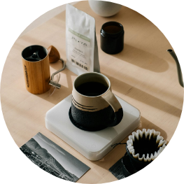
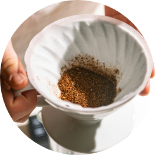
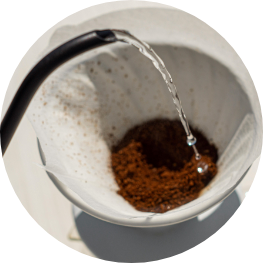

HOW TO?
로스팅 고르는 법
로스팅 고르는 법 어렵지 않아요!
원하는 정도로 선택 후 단계별 다양한 풍미를 즐겨보세요.
EASY POUR에서는 각자의 취향에 맞는 최적의 맛을 즐길 수 있도록 다섯가지 로스팅 단계로 설정했습니다.
로스팅 별 특징과
추천비율을
알려드릴게요!
라이트 로스팅 Light Roasting
원두 본연의 고유한 산미와 과일, 꽃 향기가 가장 잘 드러납니다.
산뜻하고 상쾌한 맛을
선호하는 분들에게
적합합니다.
[추천 노트]
| 그라인딩 | 중간 굵기 (모래보다 약간 굵은 정도) |
|---|---|
| 비율 | 1:16 ( 커피 1g당 물 16g) |
| 추출 시간 | 2분 30초에서 3분 |
| 추천 원두 | 에티오피아, 케냐와 같은 아프리카 원두 (특히 워시드 프로세스) |
| 추천 향미 | 밝고 톡 쏘는 산미, 과일과 꽃향, 시트러스 계열 |
| *Tip | 라이트 로스팅 커피는 산미가 두드러지므로,
빠른 추출을 통해 산미를 잡아주면 좋은 밸런스를 만들 수 있습니다. |
미디엄 로스팅 Midium Roasting
미디엄 로스팅은 라이트 로스팅보다 조금 더 깊은 풍미가 느껴집니다.
산미와 단맛, 그리고 적당한 쓴맛이 균형 있게 어우러져 누구나 즐기기 좋은 맛입니다.
균형
잡힌 맛을 선호하고, 원두의
다양한 풍미를 경험하고 싶은 분들께 적합합니다
[추천 노트]
| 그라인딩 | 중간 굵기 |
|---|---|
| 비율 | 1:15 ( 커피 1g당 물 15g) |
| 추출 시간 | 3분에서 3분 30초 |
| 추천 원두 | 과테말라, 콜롬비아, 브라질 |
| 추천 향미 | 초콜릿, 견과류, 살짝의 과일향과 균형잡인 바디감 |
| *Tip | 추출시간을 좀 더 길게 가져가면
커피의 바디감이 두드러지고, 단맛이 더 잘 느껴집니다. |
미디엄 다크 로스팅 Midium Dark Roasting
좀 더 깊고 풍부한 맛을 가지고 있으며, 초콜릿이나 견과류 같은 따뜻한 뉘앙스가 느껴집니다.
단맛과 쓴맛의 조화가 좋고, 약간의 스모키함이 추가됩니다.
좀 더 강렬한 맛과
깊이 있는
풍미를 원하는 분들에게
적합합니다
[추천 노트]
| 그라인딩 | 중간 ~ 굵은 정도 |
|---|---|
| 비율 | 1:14.5 ( 커피 1g당 물 14.5g) |
| 추출 시간 | 3분 30초에서 4분 |
| 추천 원두 | 인도네시아, 브라질, 코스타리카 |
| 추천 향미 | 다크 초콜릿, 구운 견과류. 스모키, 스파이스 |
| *Tip | 단맛과 쌉쌀한 맛이 조화되기 때문에 추출시간을 늘려 바디감을 살려줍니다.
하지만 너무 길어지는 추출시간은 탄맛을 증가시키므로 유의합니다. |
다크 로스팅 Dark Roasting
로스팅향이 강조되며, 캐러멜화된 단맛과 스모키한 향이 특징입니다.
원두의 산미는 거의 사라지고, 깊고 묵직한 맛으로 강한 바디감이 느껴집니다.
강한 커피 맛과
쓴맛을 즐기는 분들에게
적합합니다.
[추천 노트]
| 그라인딩 | 굵은 정도 (굵은 소금보다 약간 더 굴게) |
|---|---|
| 비율 | 1:14 ( 커피 1g당 물 14g) |
| 추출 시간 | 4분에서 4분 30초 |
| 추천 원두 | 수마트라, 브라질, 베트남 |
| 추천 향미 | 스모키, 다크 카카오, 카라멜라이징 설탕, 정향 |
| *Tip | 추출시간이 길어질수록 과한 쓴맛이 나올 수 있으므로.
4분 30초 이상으로 가지지 않는 것이 좋습니다. |
풀 로스팅 Full Roasting
가장 강한 로스팅 단계. 깊고 진한 스모키한 풍미와 거의 탄맛에 가까운 강렬한 쓴맛이 느껴집니다.
바디감이 매우 무겁고 풍부한 맛을 선사합니다.
강한 에스프레소 스타일의을
좋아하고, 묵직한
바디감을 선호하는 분들에게
추천합니다.
[추천 노트]
| 그라인딩 | 굵은 그라인드 사용 추천 (프렌치 프레스 수준) |
|---|---|
| 비율 | 1:13.5 ( 커피 1g당 물 13.5g) |
| 추출 시간 | 4분 30초에서 5분 |
| 추천 원두 | 바디감이 강한 수마트라, 로부스타원두 혼합 |
| 추천 향미 | 스모키, 탄 설탕, 장작, 스파이스 |
| *Tip | 에스프레소를 즐겨마시는 분들에게 추천드립니다.
추출시간을 길게 가져가면 묵직한 바디감이 극대화됩니다. |
드립 추출 비율에 따라
원두의 향미 표현은 더욱 다채로워집니다.
드립이 처음이신분들, 비율정하기 어려우신 분들은 추천비율로 즐겨보신 후
자신에게 맞는 드립비율을 찾아보세요!
Let's EASY POUR ! 우리 함께 시작해요.
원두 구매시 원두별 간편안내서가 함께 동봉됩니다.
이지푸어 드립온라인 강좌도 준비되어있답니다.
자세한 드립법은 EASYPOUR 유튜브를 확인하세요!
추출비율은 구매한 원두와 동봉된 안내서를 참고해보세요!
-

STEP. 1
여과지를 드리퍼에 넣고
뜨거운 물로 여과지를 적셔줍니다.
사용한 물은 버려줍니다. -

STEP. 2
원두를 드리퍼에 넣습니다.
이때 최대한 고르게 넣어주세요.
3차에 나누어 추출을 시작합니다. -

STEP. 3
중심부터 바깥쪽으로 원을 그리며 물을 부어줍니다.
이때 물줄기가 너무 강하거나 끊기면 안 되고,
천천히 부어야 커피가 고르게 추출됩니다.